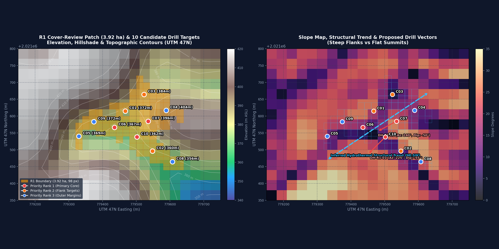
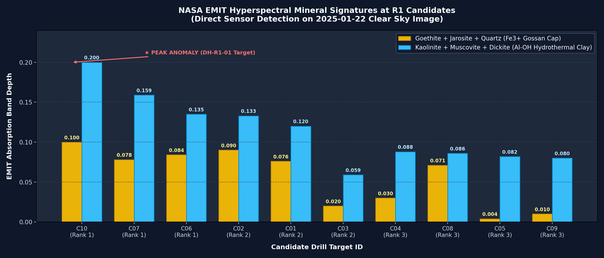

การบูรณาการข้อมูลภาพถ่ายดาวเทียมความละเอียดสเปกตรัมสูง NASA EMIT Hyperspectral (285 Bands) ร่วมกับฐานข้อมูลพื้นที่และโมเดลภูมิประเทศ Copernicus GLO-30 DEM
ภาพด้านล่างแสดงขอบเขตจริงของแปลง R1 (กรอบสีเหลือง/ฟ้า ขนาด 98 พิกเซล 20x20m) ซ้อนทับบนแบบจำลองความสูง (Hillshade & Elevation Contours) พร้อมทั้งระบุตำแหน่ง 10 แคนดิเดต (C01 – C10), เวกเตอร์โครงสร้างรอยแตกแร่น้ำร้อน (Inferred Structural Lineament NE-SW) และทิศทางหลุมเจาะที่เสนอ (DH-R1-01 & DH-R1-02):

จากการสแกนเซนเซอร์ NASA EMIT (ภาพฟ้าเปิด 2025-01-22 เมฆ 2%) พิกัดแปลง R1 ตรวจพบหลักฐานทางธรณีวิทยาที่สำคัญอย่างยิ่ง ซึ่งชี้ชัดว่าเป็น ระบบสายแร่น้ำร้อนใต้พิภพ (Hydrothermal Alteration System) ไม่ใช่เพียงหญ้าแห้งหรือดินเปล่าทั่วไป:

พบ Goethite + Quartz + Jarosite เข้มข้นสูงสุดที่จุด C10 (Band Depth 0.100) และ C02 (0.090) แสดงถึงการผุพังของสายแร่ซัลไฟด์ (Pyrite/Chalcopyrite) ที่มักเกิดร่วมกับทองคำ
พบ Kaolinite + Muscovite (Ruby Mica) สูงสุดที่จุด C10 (Band Depth 0.200) และพบ Halloysite (0.159) หนาแน่นที่จุด C07 บ่งบอกถึงโซนแปรสภาพ Phyllic / Argillic
พบแร่ Dickite บนลานยอดเนินที่จุด C03 (Band Depth 0.059) ซึ่งเป็นแร่สำคัญที่เกิดในสภาวะน้ำร้อนอุณหภูมิสูงของระบบ Epithermal Gold Deposit
ทุกจุดแคนดิเดต (C01 – C10) ผ่านการตรวจสอบยืนยันแล้วว่า ตกอยู่ภายในขอบเขตพิกเซลจริงของแปลง R1 ทั้งหมด 100%:
| ID | Priority | Easting (m) | Northing (m) | Latitude (°N) | Longitude (°E) | Elev (m) | Slope | แร่เด่นที่พบ (NASA EMIT) | Band Depth | ข้อเสนอแนะในการเจาะ |
|---|---|---|---|---|---|---|---|---|---|---|
| C10 | Rank 1 (หลัก) | 779,502.0 | 2,021,538.0 | 18.265105 | 101.643454 | 362.5 m | 11.3° | Goethite+Qtz+Jarosite / Kaolinite+Mica | 0.100 / 0.200 | DH-R1-01: Az 225°, Dip -55°, Depth 100m |
| C07 | Rank 1 (หลัก) | 779,535.5 | 2,021,584.5 | 18.265521 | 101.643776 | 396.4 m | 24.5° | Halloysite / Goethite+Jarosite | 0.078 / 0.159 | DH-R1-02: Az 240°, Dip -50°, Depth 120m |
| C06 | Rank 1 (หลัก) | 779,435.5 | 2,021,566.4 | 18.265370 | 101.642829 | 366.6 m | 16.5° | Kaolinite+Muscovite / Goethite | 0.084 / 0.135 | DH-R1-03: Az 230°, Dip -50°, Depth 80m |
| C02 | Rank 2 | 779,548.0 | 2,021,496.0 | 18.264720 | 101.643883 | 359.6 m | 9.5° | Kaolinite+Muscovite / Goethite+Jarosite | 0.090 / 0.133 | ลานเปิดโล่งด้านใต้ ตั้งแท่นเจาะง่ายมาก |
| C01 | Rank 2 | 779,467.5 | 2,021,615.0 | 18.265805 | 101.643138 | 372.2 m | 18.7° | Kaolinite+Muscovite / Goethite | 0.076 / 0.120 | แนวต่อเชื่อมโครงสร้างสันเขาตะวันตกเฉียงเหนือ |
| C03 | Rank 2 | 779,522.9 | 2,021,664.3 | 18.266243 | 101.643668 | 384.2 m | 4.7° | Dickite (Epithermal Indicator) | 0.059 | ลานราบบนยอดเนิน เจาะดักแนวแกนน้ำร้อนลึก |
| C04 | Rank 3 | 779,588.6 | 2,021,617.1 | 18.265809 | 101.644283 | 403.5 m | 14.5° | Kaolinite+Muscovite | 0.088 | ยอดเนินเขาสูงสุดของแปลง (403.5 ม.) |
| C08 | Rank 3 | 779,607.1 | 2,021,464.3 | 18.264426 | 101.644437 | 356.4 m | 22.7° | Goethite+Jarosite / Kaolinite | 0.071 / 0.086 | เชิงเขารับน้ำทิศใต้ เหมาะร่อนแร่สำรวจ (Panning) |
| C05 | Rank 3 | 779,330.0 | 2,021,540.0 | 18.265146 | 101.641828 | 368.6 m | 12.6° | Kaolinite+Muscovite | 0.082 | ขอบสุดด้านตะวันตกของแปลง R1 |
| C09 | Rank 3 | 779,374.4 | 2,021,583.3 | 18.265531 | 101.642254 | 372.2 m | 19.5° | Kaolinite+Muscovite | 0.080 | ขอบทางลาดตะวันตกเฉียงเหนือ |
การเจาะสำรวจสายแร่น้ำร้อนใต้ผิวดิน ห้ามเจาะดิ่ง 90° แนะนำให้ใช้การเจาะทำมุมทแยง (Inclined Diamond Core Drilling - HQ/NQ) เพื่อตัดผ่านสายควอตซ์และรอยเลื่อน โดยเริ่มจาก 2 หลุมทดสอบหลัก:
ตั้งแท่นเจาะที่ใจกลางความเข้มข้นของแร่ Goethite+Jarosite+Kaolinite บนความลาดชันเพียง 11.3°
ตั้งแท่นเจาะบนสันเขาที่ตรวจพบแร่ Halloysite หนาแน่น เจาะตัดผ่านรอยแตกโครงสร้าง